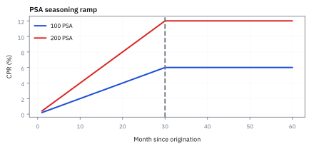
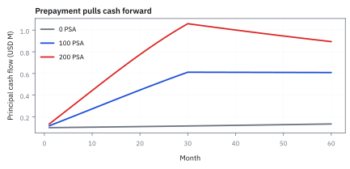
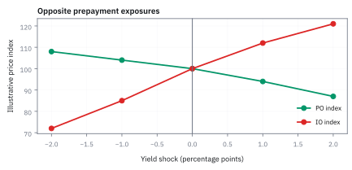
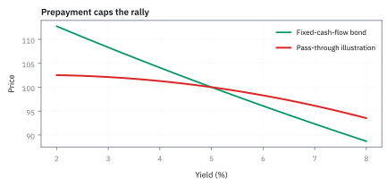

22.2 Prepayment Risk and the Public Securities Association Benchmark
ผู้กู้คืนหนี้ก่อนกำหนดได้ทุกเมื่อ เงินต้นของ pool 30 ปีจึงกลับมาเร็วหรือช้าตามอัตราดอกเบี้ย และผู้ถือ MBS ได้ราคาที่ขึ้นยากแต่ลงง่าย
ผู้ลงทุนจะซื้อ pass-through \$400 ล้าน ผู้กู้จ่าย 8.125% ผู้ลงทุนได้ 7.50% สินเชื่อปล่อยมาแล้ว 3 เดือนจึงเหลือ 357 งวด เขาถามว่าเงินต้นจะกลับมาโดยเฉลี่ยในกี่ปี ผู้ขายคิดจากตารางผ่อนแบบ 22.1 แล้วตอบว่า “ราว 20.4 ปี” ถ้าตลาดคาดว่าผู้กู้จะคืนก่อนกำหนดตามมาตรฐาน 100 PSA คำตอบคือเท่าไร และถ้าอัตราดอกเบี้ยลงจนคืนเร็วเป็น 200 PSA ล่ะ?
ลองตอบก่อนเปิดเฉลย
ที่ 100 PSA เงินต้นกลับเฉลี่ยใน 11.67 ปี ไม่ใช่ 20.38 ปี และที่ 200 PSA เหลือ 7.69 ปี pool ที่เรียกว่า “30 ปี” จึงทำตัวเหมือนพันธบัตร 12 ปีหรือ 8 ปีก็ได้ แล้วแต่ว่าผู้กู้ตัดสินใจอย่างไร ความไม่รู้นี้คือ prepayment risk ขั้นที่ 4 คิดตัวเลขเหล่านี้จาก pool เดียวกับไฟล์ Excel ของคอร์ส
สิ่งที่เราจะสร้าง
22.1 สมมติว่าผู้กู้จ่ายตามตารางจนครบ และขั้นที่ 6 ของหน้านั้นเห็นแล้วว่าผู้กู้มีเหตุผลจะปิดหนี้เมื่ออัตราตลาดลง ผู้กู้ยังปิดหนี้เมื่อขายบ้านหรือย้ายงานด้วย หน้านี้ใส่พฤติกรรมนั้นเข้าไปในตาราง แล้ววัดผลที่ 18.2 วัดกับพันธบัตรธรรมดา คือ duration และ convexity
เราจะแปลงอัตราคืนก่อนกำหนดรายปีเป็นรายเดือน ดูเส้นมาตรฐาน PSA เดินเงินของ pool หนึ่งเดือนตามไฟล์ของคอร์ส หาอายุเฉลี่ยของเงินต้นที่ความเร็วต่าง ๆ แยก pool เป็นชิ้นที่ได้แต่เงินต้น (PO) กับชิ้นที่ได้แต่ดอกเบี้ย (IO) ดูแบบจำลองของ Richard and Roll ที่ทำให้ความเร็วขึ้นกับอัตราดอกเบี้ย แล้วคิดราคา duration และ convexity ของ pass-through เมื่อความเร็วตอบสนองต่ออัตรา
ศัพท์ที่ใช้ในหัวข้อนี้
- Prepayment
- เงินต้นที่ผู้กู้คืนเกินตาราง จากการขายบ้าน กู้ใหม่เพื่อปิดหนี้เดิม (refinance) หรือโปะเพิ่ม เงินก้อนนี้ส่งต่อให้ผู้ถือ MBS ทันที ทำให้ตารางของ 22.1 ใช้ไม่ได้ตรง ๆ
- CPR และ SMM
- Conditional prepayment rate คือสัดส่วนของหนี้ที่ยังค้างซึ่งถูกคืนก่อนกำหนดในหนึ่งปี single monthly mortality คืออัตราเดียวกันแปลงเป็นรายเดือน ตลาดคุยกันเป็น CPR แต่การคำนวณเดินด้วย SMM
- PSA benchmark
- เส้น CPR มาตรฐานของ Public Securities Association ที่ไต่ขึ้นตามอายุสินเชื่อ 30 เดือนแล้วคงที่ 6% ความเร็วอื่นพูดเป็นกี่เท่าของเส้นนี้ เช่น 200 PSA เป็นภาษากลางในการเสนอราคา ไม่ใช่คำพยากรณ์
- Average life
- เวลาเฉลี่ยที่เงินต้นแต่ละดอลลาร์กลับมา ใช้บอกว่าตราสารที่ผ่อนคืนมีอายุจริงเท่าไร ขึ้นกับความเร็วการคืนก่อนกำหนดที่สมมติ
- Principal-only (PO) และ interest-only (IO)
- สองชิ้นที่ตัดจาก pass-through: PO ได้เงินต้นทุกดอลลาร์ IO ได้ดอกเบี้ยทุกดอลลาร์ ใช้แยกผลของความเร็ว เพราะคืนเร็วทำให้ PO ได้เงินเร็วแต่ทำให้ IO เสียฐานดอกเบี้ย
- Effective duration และ negative convexity
- Duration และ convexity ที่วัดโดยคิดราคาใหม่ทั้งชุดเมื่ออัตราขยับ เพราะเงินสดเปลี่ยนตามอัตรา MBS มี convexity ติดลบ คือราคาขึ้นน้อยเมื่ออัตราลง แต่ลงเต็มเมื่ออัตราขึ้น
- Refinancing incentive และ burnout
- แรงจูงใจกู้ใหม่คือส่วนต่างระหว่างอัตราที่ผู้กู้จ่ายอยู่กับอัตราใหม่ในตลาด burnout คือการที่ผู้กู้ที่ refinance ง่ายออกจาก pool ไปแล้ว คนที่เหลือจึงคืนช้าลงแม้แรงจูงใจเท่าเดิม
สัญลักษณ์และหน่วย
| สัญลักษณ์ | ความหมาย | หน่วย |
|---|---|---|
| $\mathrm{CPR},\ \mathrm{SMM}$ | อัตราคืนก่อนกำหนดต่อปี และต่อเดือน | สัดส่วน |
| $a,\ k$ | อายุสินเชื่อนับจากวันปล่อยกู้ และความเร็วเป็นกี่เท่าของ PSA (100 PSA คือ $k=1$) | เดือน, เท่า |
| $B_{t-1},\ A_t$ | หนี้ต้นเดือน $t$ และค่างวดที่คิดใหม่จากหนี้นั้น | ล้าน \$ |
| $P_t,\ PP_t$ | เงินต้นตามตาราง และเงินคืนก่อนกำหนด | ล้าน \$ ต่อเดือน |
| $\mathrm{AL}$ | average life | ปี |
| $V_{PO},\ V_{IO}$ | มูลค่าวันนี้ของชิ้น PO และ IO | \$ หรือล้าน \$ |
| $y,\ \Delta y$ | อัตราที่ใช้คิดลดต่อปี (ทบรายเดือน) และขนาดที่ขยับ | สัดส่วนต่อปี |
| $D_{\rm eff},\ C_{\rm eff}$ | effective duration และ effective convexity | ปี, ปี² |
| $\Delta$ | ส่วนต่าง WAC ลบอัตรา 10 ปี ในแบบจำลอง Richard and Roll | สัดส่วนต่อปี |
ขั้นที่ 1 — อัตราคืนก่อนกำหนดรายปีเป็นรายเดือน
ตลาดพูดว่า pool นี้คืนก่อนกำหนด “6% ต่อปี” หมายความว่าหนี้ที่ยังค้างอยู่ 6% ถูกคืนก่อนกำหนดในหนึ่งปี แต่ตารางเดินทีละเดือน ต้องหาอัตรารายเดือนที่ทบกัน 12 เดือนแล้วได้ 6% พอดี
บรรทัดแรกคือหัวใจ: หนี้หนึ่งดอลลาร์จะรอดจากการคืนก่อนกำหนดทั้งปีได้ ต้องรอดทุกเดือนติดกัน 12 เดือน สัดส่วนที่รอดจึงคูณกัน ไม่ได้บวกกัน ตรรกะเดียวกับโอกาสรอดจากการผิดนัดใน 20.6 บรรทัดที่สามใส่ CPR 6% จึงได้ 0.5143% ต่อเดือน
ถ้าหาร 6% ด้วย 12 ได้ 0.5% ต่อเดือน สัดส่วนที่รอดทั้งปีคือ 0.9416 (บรรทัดสุดท้าย) คืนก่อนจริงแค่ 5.84% ไม่ใช่ 6% ส่วนต่างเดือนละ 0.0143 จุดดูเล็ก แต่มันคูณกับหนี้ทั้ง pool ทุกเดือน
ขั้นที่ 2 — เส้นมาตรฐาน PSA
สินเชื่อที่เพิ่งปล่อยแทบไม่มีใครคืนก่อน เพราะเพิ่งจ่ายค่าธรรมเนียมกู้และเพิ่งย้ายเข้าบ้าน ความเร็วจึงไต่ขึ้นตามอายุ PSA นิยามเส้นมาตรฐานของการไต่นี้ไว้เป็นข้อตกลงของตลาด
$a$ คืออายุของสินเชื่อนับจากวันปล่อยกู้ ไม่ใช่เดือนที่เราเริ่มถือ pool ที่ปล่อยมาแล้ว 3 เดือนจึงเริ่มที่ $a=4$ ซึ่งที่ 100 PSA ($k=1$) ได้ CPR 0.8% ช่วง 30 เดือนแรก CPR ขึ้นเดือนละ 0.2 จุด แล้วคงที่ 6% ตัวคูณ $k$ คือการพูดว่าเร็วเป็นกี่เท่าของเส้นนี้ 200 PSA จึงคงที่ที่ 12%
PSA ไม่มีอัตราดอกเบี้ยอยู่ในสูตรเลย มันจึงไม่ได้บอกว่าผู้กู้จะทำอะไร ตลาดใช้มันเป็นหน่วยวัด แล้วเถียงกันว่า pool นี้จะคืนที่กี่ PSA
Figure 22.2a — PSA ไต่ขึ้น 30 เดือนแล้วคงที่

แกนนอนคืออายุสินเชื่อเดือนที่ 1 ถึง 60 แกนตั้งคือ CPR เป็นเปอร์เซ็นต์ เส้นน้ำเงินคือ 100 PSA ขึ้นจาก 0.2% จนถึง 6% ที่เดือนที่ 30 (เส้นประแนวตั้ง) แล้วคงที่ เส้นแดงคือ 200 PSA ซึ่งสูงเป็นสองเท่าทุกจุดและคงที่ที่ 12% ถ้าใช้ CPR 6% ตั้งแต่เดือนแรกกับ pool ใหม่ จะไม่ใช่ 100 PSA
ขั้นที่ 3 — เดินเงินของ pool หนึ่งเดือน ตามไฟล์ของคอร์ส
ตอนนี้มีอัตรารายเดือนแล้ว ขั้นนี้กำหนดลำดับในหนึ่งเดือน: คิดค่างวดใหม่จากหนี้ต้นเดือนและงวดที่เหลือ หักเงินต้นตามตารางก่อน แล้วค่อยใช้ SMM กับหนี้ที่เหลือหลังหัก
โจทย์ให้อะไรมาบ้าง: pool ของไฟล์ MBS_Structure: หนี้ \$400 ล้าน ผู้กู้จ่าย 8.125% ผู้ลงทุนได้ 7.50% ปล่อยมาแล้ว 3 เดือน เหลือ 357 งวด คืนก่อนกำหนดที่ 100 PSA ตัวเลขเป็นล้านดอลลาร์
คำตอบ: เดือนแรกเงินต้นกลับมา \$0.535 ล้าน ครึ่งหนึ่งตามตาราง อีกครึ่งเป็นการคืนก่อนกำหนด ผู้ลงทุนได้ดอกเบี้ย $400(0.075/12)=\$2.5$ ล้าน ส่วนต่าง \$0.2083 ล้านเป็นค่าบริการ 0.625% ถึงเดือนที่ 15 (อายุ 18 เดือน CPR 3.6%) การคืนก่อนกำหนดเป็น \$1.1779 ล้าน หรือ 80.4% ของเงินต้นที่กลับ
ตรวจเองใน 10 วินาที: $400\times0.000669\approx0.268$ ตรงกับ $PP_1$ และทุกช่องของเดือนแรกตรงกับไฟล์ Excel ถึงทศนิยมที่สี่
ทำไมต้องคิดค่างวดใหม่ทุกเดือน? บ้านที่คืนก่อนกำหนดออกจาก pool ไปทั้งหลัง บ้านที่เหลือยังจ่ายค่างวดเดิมของตัวเอง ค่างวดรวมจึงเท่ากับค่างวดเดิมคูณสัดส่วนของ pool ที่ยังไม่ถูกคืน เช่นเดือนที่ 30 สัดส่วนนั้นคือ 0.915362 และ $2.9759(0.915362)=2.7240$ ตรงกับค่างวดที่คิดใหม่จากหนี้และงวดที่เหลือพอดี
ขั้นที่ 4 — average life: เงินต้นกลับมาเฉลี่ยเมื่อไร
เดินขั้นที่ 3 ครบ 357 เดือนแล้วได้เงินต้นรายเดือน $P_t+PP_t$ คำถามของโจทย์คือเวลาเฉลี่ยที่เงินต้นกลับมา ใช้เงินต้นของแต่ละเดือนเป็นน้ำหนักของเวลา แล้วหารด้วย 12 ให้เป็นปี
ตัวหารคือเงินต้นทั้งหมด \$400 ล้าน เพราะทุกดอลลาร์ต้องกลับมาสักเดือน น้ำหนักจึงรวมกันได้หนึ่ง ที่ 0 PSA คือตารางของ 22.1 ได้ 20.38 ปี ที่ 100 PSA เหลือ 11.67 ปี ตรงกับไฟล์ของคอร์ส ที่ 200 PSA เหลือ 7.69 ปี
นี่คือความเสี่ยงสองทิศ อัตราลง คนกู้ใหม่ เงินกลับเร็วตอนที่เอาไปลงทุนต่อได้แต่อัตราต่ำ เรียก contraction risk อัตราขึ้น ไม่มีใครกู้ใหม่ เงินค้างยาวตอนที่อยากได้คืนไปลงทุนที่อัตราสูง เรียก extension risk ผู้ถือเสียทั้งสองทาง
Figure 22.2b — pool เดียวกัน เงินต้นกลับคนละจังหวะ

รูปนี้ใช้ pool ใหม่ \$100 ล้าน อัตรา 6% 360 งวด (ไม่ใช่ pool ของไฟล์) แกนนอนคือเดือนที่ 1 ถึง 60 แกนตั้งคือเงินต้นต่อเดือนเป็นล้านดอลลาร์ เส้นเทา น้ำเงิน แดง คือ 0, 100 และ 200 PSA ความเร็วที่สูงกว่าดึงเงินต้นมาข้างหน้า ข้อบกพร่องของรูป: สองเส้นหลังคิดเงินต้นตามตารางจากค่างวดเดิมโดยไม่คิดใหม่ (ความผิดที่ขั้นที่ 3 เตือน) จึงสูงเกินจริง เดือนที่ 30 เส้น 100 PSA อยู่ที่ 0.61 ล้าน ค่าที่ถูกคือ 0.57 ล้าน และเดือนที่ 60 อยู่ที่ 0.61 เทียบกับ 0.49 ล้าน เส้น 0 PSA ถูกต้อง
ขั้นที่ 5 — PO และ IO เมื่อยังไม่มีการคืนก่อนกำหนด
ถ้าตัด pass-through เป็นสองชิ้น ชิ้นหนึ่งได้แต่เงินต้น อีกชิ้นได้แต่ดอกเบี้ย สองชิ้นนี้มีค่าเท่าไร เริ่มจากกรณีไม่มีการคืนก่อน ซึ่งมีสูตรปิด ใช้สินเชื่อ \$100,000 ของ 22.1 ที่เงินต้นแต่ละงวดคือ $P_1(1+r)^{k-1}$ และคิดลดด้วยอัตรา $r_f$ ต่อเดือน
เมื่อ $r_f=r$ ทุกพจน์ของผลรวมเหลือ $P_1/(1+r)$ เท่ากันหมด เพราะเงินต้นโตด้วยอัตราเดียวกับที่ถูกคิดลด PO จึงเท่ากับ $360(65.4138)/1.006771$ ส่วน IO คือส่วนที่เหลือของสินเชื่อ ซึ่งมีค่า \$100,000 พอดีที่อัตรานี้ (22.1 ขั้นที่ 6)
duration คือเวลาเฉลี่ยที่ถ่วงด้วยมูลค่าวันนี้ของเงินแต่ละก้อน (18.2) PO มีน้ำหนักเท่ากันทุกเดือน จึงได้ค่าเฉลี่ยของเดือนที่ 1 ถึง 360 หารด้วย 12 IO ได้เงินก้อนใหญ่ช่วงต้น duration จึงเหลือราวครึ่งหนึ่งของ PO
ถ้าคิดลดด้วย 0.5% ต่อเดือนแทน PO ขึ้นเป็น \$32,680.56 (+39.7%) แต่ IO ขึ้นแค่เป็น \$91,161.75 (+19.0%) ชิ้นที่รอนานกว่าไวต่ออัตรามากกว่า ตามที่ 18.2 บอก แต่นี่ยังเป็นโลกที่ไม่มีใครคืนก่อน
ขั้นที่ 6 — ใส่ความเร็วเข้าไป: PO กับ IO แย่งมูลค่ากัน
ตอนนี้ตัด pool \$400 ล้านของไฟล์เป็น PO กับ IO แล้วคิดลดทั้งสองด้วยอัตราเดียวกับที่ผู้ลงทุนได้ 7.50% (ทบรายเดือน) เพื่อแยกผลของความเร็วออกจากผลของอัตราคิดลด
บรรทัดแรกคือมูลค่าของ pass-through ทั้งก้อนเมื่อยืนอยู่ต้นเดือน $t$ โดย $i=0.075/12$ เดือนสุดท้ายหนี้เป็นศูนย์และมูลค่าก็เป็นศูนย์ ถ้า $V_t=B_t$ แล้ว เพราะ $P_t+PP_t+B_t=B_{t-1}$ ตัวเศษจึงเป็น $(1+i)B_{t-1}$
ย้อนทีละเดือนจนถึงวันนี้ มูลค่าทั้งก้อนเท่ากับหนี้ค้าง \$400 ล้าน ไม่ว่าความเร็วจะเป็นเท่าไร ความเร็วจึงไม่ได้สร้างหรือทำลายมูลค่ารวม มันแค่ย้ายมูลค่าระหว่างสองชิ้น
จาก 100 เป็น 200 PSA PO ได้เพิ่ม \$49.90 ล้าน (+25.6%) เพราะได้เงินต้นเร็วขึ้น IO เสีย \$49.90 ล้าน (−24.4%) เพราะหนี้ที่ใช้คิดดอกเบี้ยหายเร็วขึ้น IO จึงเป็นตราสารแปลกที่ราคาลงเมื่ออัตราลง เพราะอัตราลงทำให้คนกู้ใหม่
Figure 22.2c — PO กับ IO รับแรงกระแทกคนละทิศ

รูปนี้เป็นตัวเลขสมมติเพื่อให้เห็นทิศ ไม่ได้คำนวณจากแบบจำลองในหน้านี้ แกนนอนคืออัตราที่ขยับ −2 ถึง +2 จุด แกนตั้งคือดัชนีราคาที่ 100 เมื่อไม่ขยับ PO (เขียว) เป็น 108, 104, 100, 94, 87 และ IO (แดง) เป็น 72, 85, 100, 112, 121 อัตราลงทำให้คืนเร็ว PO ได้ประโยชน์สองต่อ (คิดลดน้อยลงและได้เงินเร็วขึ้น) ส่วน IO เสียฐานดอกเบี้ยมากกว่าที่ได้จากการคิดลด ขนาดจริงดูได้จากขั้นที่ 6
ขั้นที่ 7 — ความเร็วมาจากไหน: แบบจำลองของ Richard and Roll
PSA ไม่รู้จักอัตราดอกเบี้ย แต่ผู้กู้รู้ ขั้นนี้ใช้แบบจำลองที่ Richard และ Roll ตีพิมพ์ในปี 1989 ซึ่งคูณสี่ปัจจัยเข้าด้วยกัน ปัจจัยสำคัญคือแรงจูงใจกู้ใหม่ ซึ่งขึ้นกับว่า WAC ของ pool สูงกว่าอัตรา 10 ปีในตลาดแค่ไหน
$RI$ เป็นรูปตัว S เพราะ arctan มีค่าระหว่าง $-\pi/2$ กับ $\pi/2$ จึงตันที่ $0.28\pm0.14(\pi/2)$ คือ 6.01% และ 49.99% จุดกลางของตัว S อยู่ที่ $x=0$ หรือ $\Delta=8.57/430$ คือส่วนต่าง 1.99 จุด ต่ำกว่านั้นผู้กู้ส่วนใหญ่ไม่กู้ใหม่ (คืนแค่ราว 7 ถึง 8% ต่อปีจากการย้ายบ้าน) เกินนั้นคนแห่กู้ใหม่
$AGE$ คือการไต่ 30 เดือนแบบ PSA $MM$ คือฤดูกาลย้ายบ้าน ซึ่งไม่มีตัวเลขในตัวอย่างนี้จึงใช้ 1 และ $BM$ คือ burnout ที่ลดความเร็วเมื่อ pool หดลง
Figure 22.2d — แรงจูงใจกู้ใหม่เป็นรูปตัว S

แกนนอนคือ WAC ลบอัตรา 10 ปีเป็นจุด (−3 ถึง +4) แกนตั้งคือ $RI$ เป็น % CPR เส้นประสองเส้นคือเพดาน 49.99% และพื้น 6.01% จุดที่ส่วนต่าง 0 มีป้าย 7.6% และจุดที่ส่วนต่าง 2.125 มีป้าย 35.2% ตรงกับขั้นที่ 7 เส้นชันที่สุดใกล้ส่วนต่าง 2 จุด ซึ่งเป็นที่ที่ความเร็วเปลี่ยนมากที่สุดต่อการขยับของอัตรา
ขั้นที่ 8 — ราคาที่ขึ้นยากแต่ลงง่าย: effective duration และ convexity
18.2 วัด duration และ convexity จากสูตรที่ถือว่าเงินสดคงที่ แต่เงินของ pass-through เปลี่ยนตามอัตรา จึงต้องคิดราคาใหม่ทั้งชุดที่อัตราขยับขึ้นและลง แล้ววัดความชันและความโค้งจากสามราคา
โจทย์ให้อะไรมาบ้าง: pool ของไฟล์ ราคาเป็นต่อหนี้ 100 คิดลดด้วย $y$ และให้ความเร็วตอบสนองต่ออัตรา: CPR ช่วงคงที่คือ $RI(8.125\%-y)$ ตามขั้นที่ 7 ไต่ 30 เดือนแบบ PSA ไม่มี burnout และสมมติว่าอัตราคิดลดกับอัตรา 10 ปีขยับเท่ากัน ตั้งต้นที่ $y=7\%$ ขยับ $\pm0.5\%$
คำตอบ: ที่สามอัตรานี้ CPR ช่วงคงที่คือ 13.90%, 9.67% และ 8.37% อัตราลง 0.5 จุด ราคาขึ้นแค่ 2.08 แต่อัตราขึ้น 0.5 จุด ราคาลง 2.93 convexity ติดลบ −330 ถ้าตรึงความเร็วไว้ที่ 9.67% ทั้งสามจุด (เงินสดคงที่แบบพันธบัตร) ราคาที่ 6.5% จะเป็น 106.01 ได้ $D_{\rm eff}=5.84$ และ convexity บวก +59.5 การตอบสนองของผู้กู้จึงกินกำไรขาขึ้นไป 1.00 ต่อหนี้ 100 ส่วนขาลงเท่ากันทั้งสองแบบ เพราะที่ 7.5% ความเร็วไม่มีผลต่อราคาตามขั้นที่ 6
ตรวจเองใน 10 วินาที: $P_++P_-=205.01$ น้อยกว่า $2P_0=205.85$ ผลต่างติดลบจึงได้ convexity ติดลบ และราคาที่ 7.5% คือ 100.00 พอดีตามเหตุผลของขั้นที่ 6
Figure 22.2e — การคืนก่อนกำหนดตัดยอดขาขึ้นของราคา

รูปนี้เป็นเส้นสมมติเพื่อสอน ไม่ได้มาจากแบบจำลองของขั้นที่ 8 แกนนอนคือ yield 2% ถึง 8% แกนตั้งคือราคา เส้นเขียวคือพันธบัตรเงินสดคงที่ $100e^{-0.04(y-5)}$ (y เป็นจุด) ซึ่งโค้งหงาย เส้นแดงคือพาราโบลา $100+1.5(5-y)-0.22(5-y)^2$ ซึ่งโค้งคว่ำ ที่ yield 2% เส้นเขียวขึ้นไป 112.75 แต่เส้นแดงขึ้นได้แค่ 102.52 รูปร่างนี้คือความหมายของ convexity ติดลบ ส่วนขนาดจริงดูจากขั้นที่ 8
คำถามที่ควรถามออกมาดัง ๆ
ทำไมผู้ถือ MBS ยอมรับของที่ขึ้นยากลงง่าย? เพราะได้ผลตอบแทนสูงกว่าพันธบัตรรัฐบาลที่อายุใกล้กัน ส่วนเกินนั้นคือค่าตอบแทนที่ผู้ถือได้จากการขายสิทธิ์ปิดหนี้ให้ผู้กู้ ผู้ถือ MBS จึงเหมือนขาย option ไปแล้วตั้งแต่วันที่ซื้อ
yield ของ MBS ที่ตลาดเสนอคืออะไร? คืออัตราที่ทำให้มูลค่าของเงินสดเท่ากับราคา โดยเงินสดสร้างจากความเร็วที่สมมติไว้ เช่น 150 PSA จึงต้องบอกความเร็วคู่กับ yield เสมอ และมักแปลงเป็นแบบทบครึ่งปีให้เทียบกับพันธบัตรได้ (bond-equivalent yield) เช่นอัตรารายเดือน 0.625% คือ $2[(1.00625)^6-1]=7.62\%$ ต่อปี
แล้วตลาดตั้งราคาจริงอย่างไร? สุ่มเส้นทางอัตราดอกเบี้ยหลายพันเส้นด้วยแบบจำลองอัตรา (บทที่ 20) ใส่ความเร็วแบบขั้นที่ 7 ในแต่ละเส้น คิดลดเงินของแต่ละเส้นแล้วเฉลี่ย (Monte Carlo) แล้วหาส่วนต่างที่บวกเข้าไปในทุกเส้นเพื่อให้ได้ราคาตลาด ส่วนต่างนั้นเรียก option-adjusted spread (OAS) ต้องทำแบบนี้เพราะ burnout ทำให้เงินของแต่ละเดือนขึ้นกับเส้นทางที่ผ่านมา จึงไม่มีสูตรปิด
ความผิดที่ให้คำตอบผิดแบบเงียบ ๆ
หาร CPR ด้วย 12: 6% ต่อปีกลายเป็น 5.84% เมื่อทบกลับ ทุกเดือนประเมินการคืนก่อนต่ำไป 2.8% ของค่าที่ถูก
ไม่คิดค่างวดใหม่: pool ใหม่ \$100 ล้าน 6% ที่ 100 PSA เดือนที่ 30 ค่างวดที่ถูกคือ \$556,802.62 ถ้าใช้ค่างวดเดิม \$599,550.53 เงินต้นตามตารางสูงเกินจริง \$42,747.90 ในเดือนนั้นเดือนเดียว Figure 22.2b มีข้อผิดนี้อยู่
ลืมอายุของ pool: pool ของไฟล์ปล่อยมาแล้ว 3 เดือน เดือนแรกจึงใช้ CPR 0.8% ถ้านับอายุเป็น 1 จะได้ 0.2% และการคืนก่อนของเดือนแรกต่ำไปสี่เท่า
ใช้ duration ของพันธบัตรกับ MBS: ในขั้นที่ 8 เงินสดคงที่ให้ 5.84 แต่ของจริงคือ 4.86 hedge ด้วยตัวเลขแรกจะขายพันธบัตรเกินไปราว 20% และเมื่ออัตราขยับไกล convexity ติดลบทำให้ขาดทุนทั้งสองทิศ
ใช้ทำอะไรบนโต๊ะจริง
desk ที่ถือ MBS รายงานราคาพร้อมตารางความเร็ว เช่น average life ที่ 50, 100, 200 และ 300 PSA (15.13 ถึง 5.64 ปีสำหรับ pool นี้) และคิด effective duration ใหม่ทุกวันเพราะมันเปลี่ยนตามอัตรา เมื่ออัตราลง duration หด ผู้ถือต้องซื้อพันธบัตรเพิ่มเพื่อรักษา hedge และเมื่ออัตราขึ้นต้องขาย การปรับ hedge ตามหลังตลาดแบบนี้คือต้นทุนของการขาย option ให้ผู้กู้
สามโจทย์ตรวจความเข้าใจ
1. pool คืนก่อนกำหนดที่ 200 PSA หลังเดือนที่ 30 SMM เท่าไร และถ้าใช้ CPR หารด้วย 12 จะทบกลับได้เท่าไร?
เฉลย
CPR คือ 12% SMM $=1-0.88^{1/12}=1.0596\%$ ถ้าใช้ 1% ต่อเดือน ทบครบปีได้ $1-0.99^{12}=11.36\%$ ต่ำกว่า 12% อยู่ 0.64 จุด
2. pool ใหม่ \$100 ล้าน อัตรา 6% 360 งวด ที่ 100 PSA ต้นเดือนที่ 30 หนี้เหลือ \$89,992,477.55 เงินต้นตามตารางและการคืนก่อนของเดือนนี้เป็นเท่าไร?
เฉลย
ค่างวดคิดใหม่จาก 331 งวดที่เหลือ = \$556,802.62 ดอกเบี้ย $0.005(89{,}992{,}477.55)=\$449,962.39$ เงินต้นตามตาราง \$106,840.23 หนี้ที่เหลือหลังหัก \$89,885,637.31 คูณ SMM 0.5143% ได้การคืนก่อน \$462,282.99 มากกว่าเงินต้นตามตาราง 4.33 เท่า
3. ตามขั้นที่ 7 ถ้าอัตรา 10 ปีลงจนส่วนต่างเป็น 1.5 จุด $RI$ เท่าไร และที่เดือนที่ 15 ของ pool ใหม่ซึ่งหดเหลือ 95% CPR เป็นเท่าไร?
เฉลย
$RI(0.015)=0.28+0.14\arctan(-2.12)=12.18\%$ ที่เดือนที่ 15 $AGE=0.5$ และ $BM=0.3+0.7(0.95)=0.965$ CPR $=12.18\%(0.5)(1)(0.965)=5.88\%$ ถ้าส่วนต่างเป็น 2.125 จุดจะได้ $35.23\%(0.5)(0.965)=17.0\%$ ความเร็วเกือบสามเท่าจากส่วนต่างที่เพิ่มแค่ 0.625 จุด
คำนวณซ้ำด้วย JavaScript
โค้ดนี้แปลง CPR เป็น SMM สร้าง CPR ตาม PSA หรือตาม Richard and Roll เดินเงินของ pool ทีละเดือนแบบไฟล์ของคอร์ส คิด average life มูลค่า PO และ IO และราคาของ pass-through ที่อัตราสามระดับ แล้วพิมพ์ตัวเลขหลักออกมาหนึ่งบรรทัด
const {min, atan} = Math;
function num(name, x) {
if (typeof x !== 'number' || !Number.isFinite(x)) throw new TypeError(`${name} must be a finite number`);
return x;
}
// Monthly rate that compounds to the annual CPR.
function smm(cpr) {
if (!(num('cpr', cpr) >= 0 && cpr < 1)) throw new RangeError('cpr must be in [0, 1)');
return 1 - (1 - cpr) ** (1 / 12);
}
// PSA benchmark: k times min(0.2% per month of age, 6%).
function psaCPR(age, k) {
if (!Number.isInteger(age) || age < 1) throw new RangeError('age must be a whole month, at least 1');
if (!(num('k', k) >= 0)) throw new RangeError('k must not be negative');
return k * min(0.002 * age, 0.06);
}
// Richard and Roll refinancing multiplier for gap = WAC minus the 10-year rate.
function refiIncentive(gap) { return 0.28 + 0.14 * atan(-8.57 + 430 * num('gap', gap)); }
// Pool month by month: payment recomputed on what is left, scheduled principal first, then prepayment.
function passThrough({B = 400, wac = 0.08125, pt = 0.075, N = 360, season = 3, cprAt}) {
if (!(num('pt', pt) > 0 && pt <= num('wac', wac))) throw new RangeError('pass-through rate must be positive and at most the WAC');
if (!Number.isInteger(season) || season < 0 || season >= N) throw new RangeError('season must be a whole month below N');
const r = wac / 12, rows = [];
for (let t = 1; t <= N - season && B > 1e-12; t++) {
const n = N - season - t + 1, A = B * r / (1 - (1 + r) ** -n);
const I = B * r, P = A - I, s = smm(cprAt(t + season)), PP = (B - P) * s;
rows.push({t, A, I, net: pt / 12 * B, P, PP, prin: P + PP});
B -= P + PP;
}
return rows;
}
function averageLife(rows) {
let tw = 0, w = 0;
for (const x of rows) { tw += x.t * x.prin; w += x.prin; }
return tw / (12 * w);
}
// PO and IO values at an annual yield y compounded monthly.
function strips(rows, y) {
let po = 0, io = 0;
for (const x of rows) { const d = (1 + num('y', y) / 12) ** -x.t; po += x.prin * d; io += x.net * d; }
return {po, io};
}
const psaPool = k => passThrough({cprAt: a => psaCPR(a, k)});
// Price per 100 when the plateau speed follows the refinancing incentive at yield y.
function price(y, plateau = refiIncentive(0.08125 - y)) {
const v = strips(passThrough({cprAt: a => plateau * min(1, a / 30)}), y);
return (v.po + v.io) / 4;
}
const base = psaPool(1), m1 = base[0];
const dy = 0.005, P0 = price(0.07), Pm = price(0.065), Pp = price(0.075);
const fixedSpeed = refiIncentive(0.08125 - 0.07), F0 = price(0.07, fixedSpeed), Fm = price(0.065, fixedSpeed), Fp = price(0.075, fixedSpeed);
console.log(JSON.stringify({
smm6: smm(0.06), naive6: 1 - (1 - 0.06 / 12) ** 12,
month1: m1, month15: base[14],
life: [0, 0.5, 1, 2, 3].map(k => averageLife(psaPool(k))),
strips: [0, 1, 2].map(k => strips(psaPool(k), 0.075)),
incentive: {at0: refiIncentive(0), at2125: refiIncentive(0.02125), at15: refiIncentive(0.015)},
prices: {Pm, P0, Pp, D: (Pm - Pp) / (2 * P0 * dy), C: (Pp + Pm - 2 * P0) / (P0 * dy * dy)},
fixed: {Fm, F0, Fp, D: (Fm - Fp) / (2 * F0 * dy), C: (Fp + Fm - 2 * F0) / (F0 * dy * dy)}
}));ที่มาที่ไป
Public Securities Association (ปัจจุบันรวมอยู่ใน SIFMA) เสนอเส้นมาตรฐานนี้ในทศวรรษ 1980 เพื่อให้ผู้ซื้อผู้ขายพูดถึงความเร็วด้วยภาษาเดียวกัน ก่อนหน้านั้นตลาดมักสมมติว่าสินเชื่อ 30 ปีจ่ายตามตาราง 12 ปีแล้วปิดทั้งก้อน Richard และ Roll (1989) เป็นหนึ่งในแบบจำลองความเร็วที่เปิดเผยสูตร ส่วนแบบจำลองที่ desk ใช้จริงมักเป็นของบริษัทเองและปรับจากข้อมูลย้อนหลังของ pool
ข้อจำกัด: วิธีนี้สมมติอะไร และของจริงเป็นอย่างไร
| สมมติอะไร | ของจริง | ผลเวลาใช้งาน |
|---|---|---|
| ความเร็วเป็นเส้น PSA ที่รู้ล่วงหน้า | ความเร็วขึ้นกับอัตรา ราคาบ้าน และเส้นทางที่ผ่านมา | ต้องรายงานหลายความเร็ว และตั้งราคาด้วย Monte Carlo กับ OAS |
| ผู้กู้ตัดสินใจตามแรงจูงใจทางการเงิน | หลายคนไม่กู้ใหม่แม้คุ้ม บางคนกู้ใหม่ไม่ได้เพราะราคาบ้านลง | แบบจำลองที่ปรับจากยุคหนึ่งพลาดในยุคที่การกู้ใหม่ยากหรือง่ายขึ้น |
| อัตราคิดลดกับอัตรา 10 ปีขยับเท่ากัน (ขั้นที่ 8) | เส้นอัตราบิดได้ และ spread ของ mortgage เปลี่ยนเอง | duration และ convexity ต้องวัดกับหลายรูปแบบการขยับ |
| ไม่มีการผิดนัด | จริงสำหรับ agency เพราะการผิดนัดกลายเป็นเงินต้นที่ agency จ่ายคืน | สำหรับ pool เอกชน การผิดนัดคือการขาดทุน ซึ่งเป็นเรื่องของ 22.4 และ 22.5 |
สิ่งที่ควรตอบได้หลังอ่าน
- SMM ได้จากการทบ: $\mathrm{SMM}=1-(1-\mathrm{CPR})^{1/12}$ CPR 6% คือ 0.5143% ต่อเดือน ไม่ใช่ 0.5%
- PSA คือหน่วยวัดความเร็วที่ไต่ 0.2 จุดต่อเดือนถึง 6% ไม่ใช่คำพยากรณ์ และต้องนับอายุจากวันปล่อยกู้
- ในแต่ละเดือนต้องคิดค่างวดใหม่ หักเงินต้นตามตารางก่อน แล้วใช้ SMM กับหนี้ที่เหลือ
- average life ของ pool ในไฟล์คือ 20.38 ปีถ้าไม่มีใครคืนก่อน 11.67 ปีที่ 100 PSA และ 7.69 ปีที่ 200 PSA
- ที่อัตราเท่ากับ pass-through rate ความเร็วไม่เปลี่ยนมูลค่ารวม แต่ย้ายมูลค่าจาก IO ไป PO และเมื่อความเร็วตอบสนองต่ออัตรา ราคาขึ้นแค่ 2.08 แต่ลง 2.93 (convexity −330)
22.3 ไม่ได้ทำให้ความไม่แน่นอนนี้หายไป แต่เขียนกติกาว่าเงินต้นแต่ละดอลลาร์ไปถึงผู้ถือชั้นไหนก่อน เพื่อให้แต่ละชั้นได้อายุที่ต่างกัน